cellmap-flow
Run deep-learning models on large 3D images as you browse them in Neuroglancer, tune the post-processing live, and run interactive fine-tuning to improve performance. Runs on a GPU cluster or entirely in the browser.
Scientific software engineer · HHMI Janelia Research Campus
Hi! I'm a scientific software engineer who likes solving whatever problems come my way, whether that means building new tools or finding creative and new uses for existing ones.
Lately I've been experimenting with agentic approaches to generate ground-truth data and to proofread image segmentations. I've also been building LLMs into scientific software to bring visualization and analysis straight to the scientist.
Tools I've built for easily processing huge microscopy volumes.
Run deep-learning models on large 3D images as you browse them in Neuroglancer, tune the post-processing live, and run interactive fine-tuning to improve performance. Runs on a GPU cluster or entirely in the browser.
Multiresolution, sharded Neuroglancer meshes with per-object properties, straight from a segmentation.
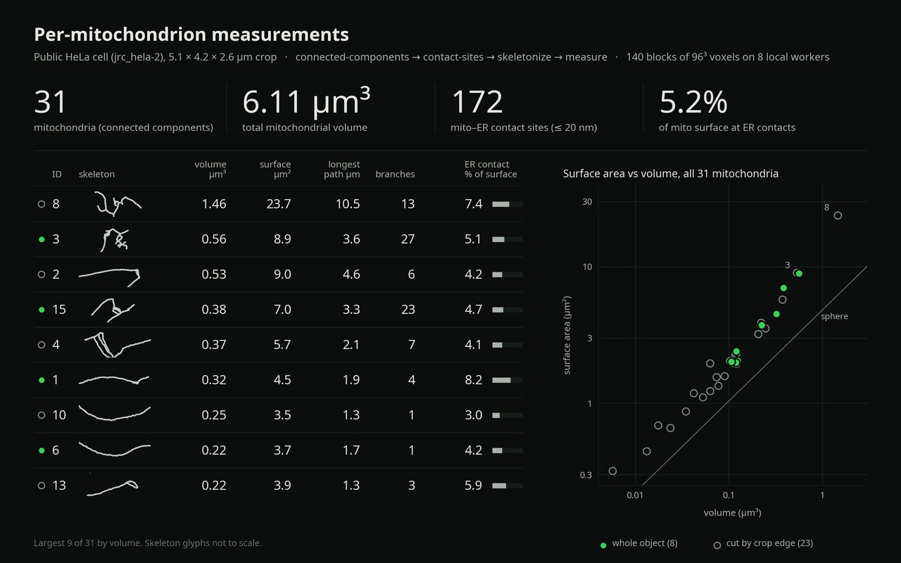
Measurements on segmentations too big for memory: connected components, hole filling, morphology and skeletons, computed block by block on a cluster.
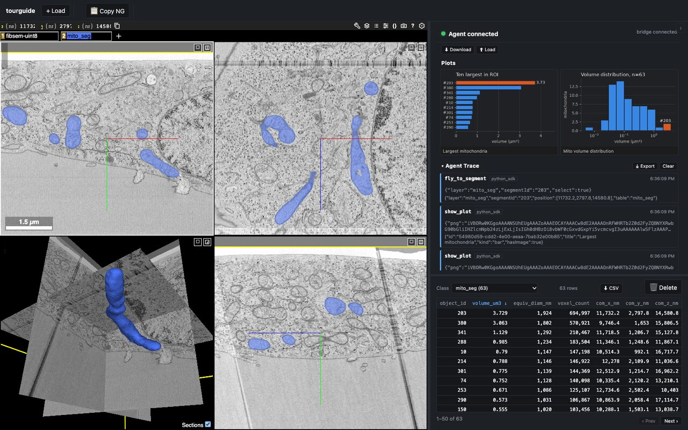
A 3D microscopy workspace that a coding agent drives. Claude Code or Cursor runs the analysis and pushes tables, plots, meshes and camera moves into Neuroglancer through an MCP server, while the scientist watches and steers.
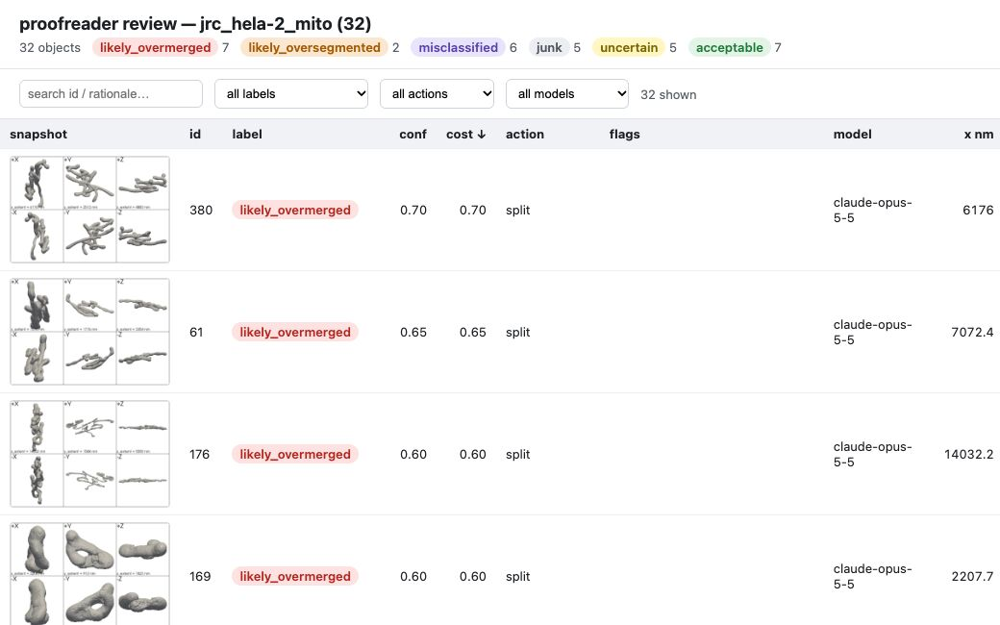
An MCP server for proofreading segmentations with an agent. An LLM looks at renders of thousands of objects, ranks the ones most likely to be wrong, and hands them to a person in priority order.
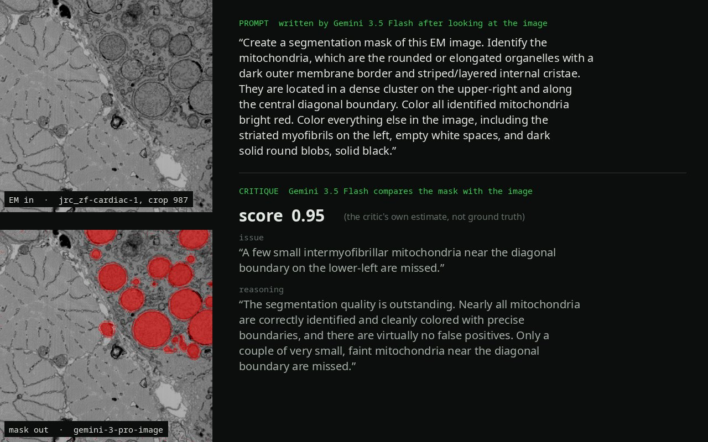
Organelle masks from electron-microscopy images with vision-language and image-editing models (Gemini, Qwen2.5-VL, Molmo 2, Gemma 3, FLUX.1 Kontext, FLUX.2) or SAM3, refined in an agentic loop.
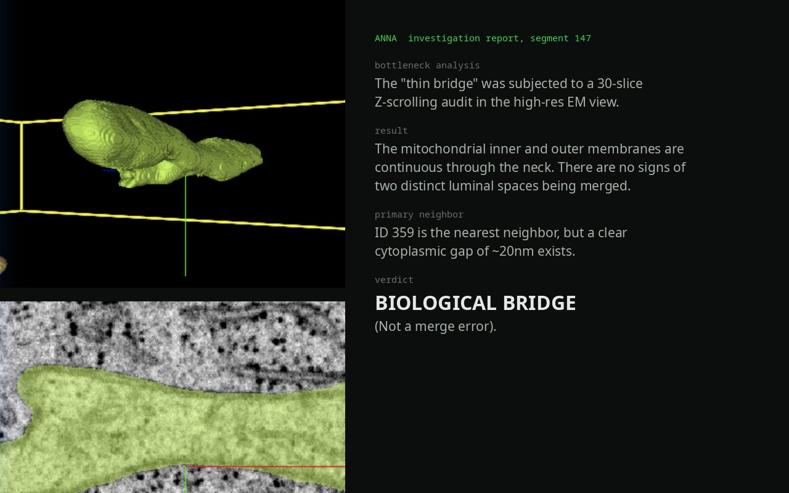
A vision agent that proofreads segmentations by orbiting each object in Neuroglancer and judging what it sees.
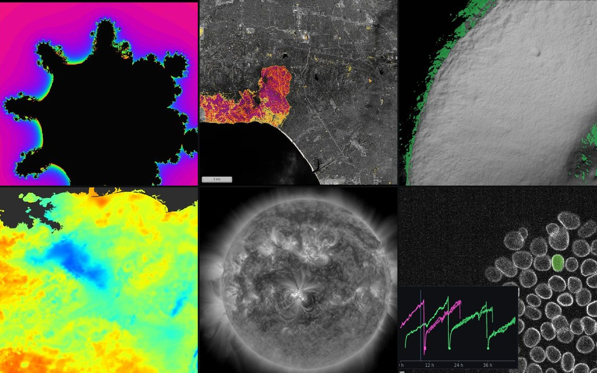
Browse a computation as if it were a stored dataset: each chunk is computed when a viewer asks for it, through a pipeline you can edit live.
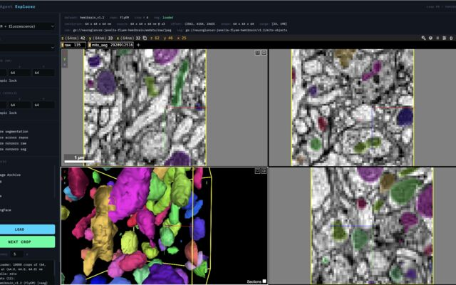
Finds and loads open microscopy data across public repositories (OpenOrganelle, MICrONS, FlyEM, EMPIAR, IDR and more) through one interface, ready for training models.
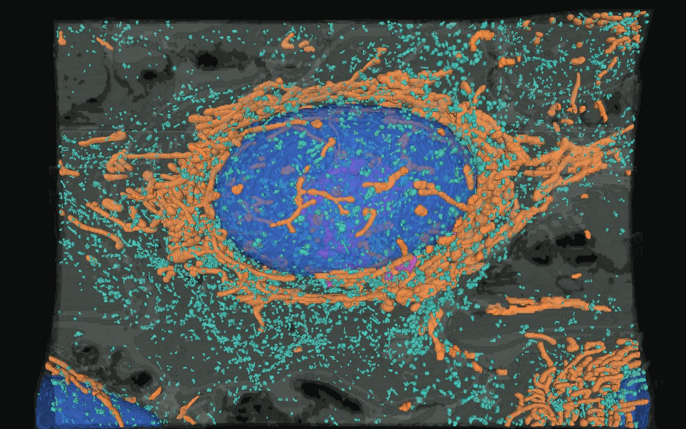
Whole-cell organelle segmentation with openly shared data. I built the Spark analysis (connected components, contact sites), the meshes on the website, and tools for annotators. The meshing code became mesh-n-bone, and the analyses were later rebuilt as cellmap-analyze.
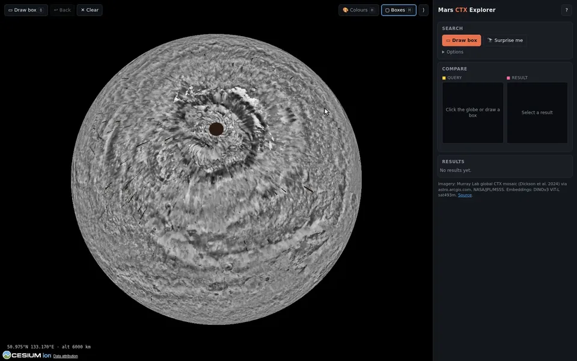
Draw a box anywhere on Mars and find the places that look like it, with DINOv3 embeddings and FAISS search.
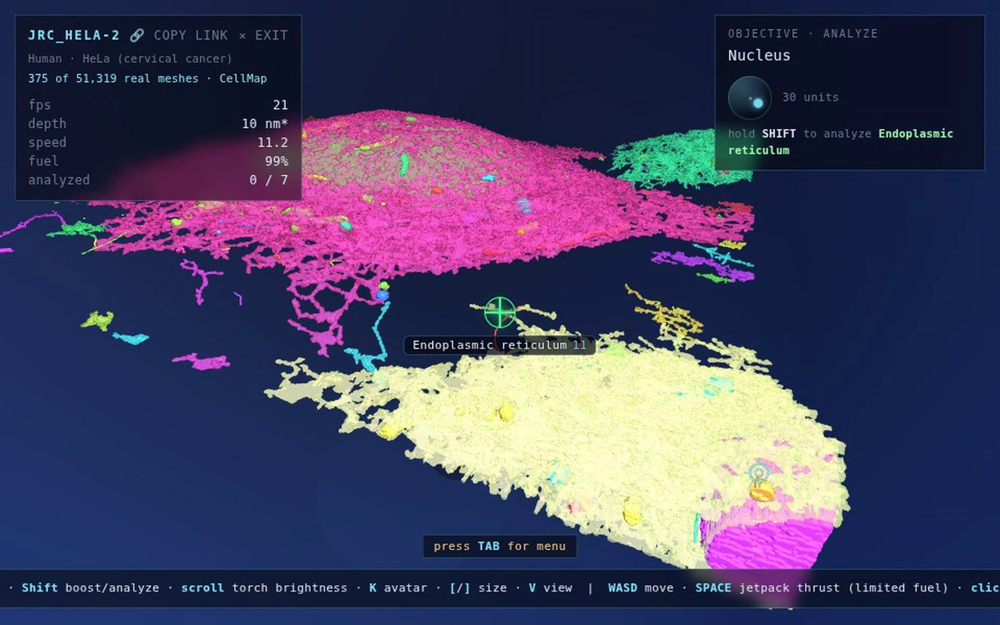
Fly, jetpack and walk through real cells from OpenOrganelle, right in the browser.
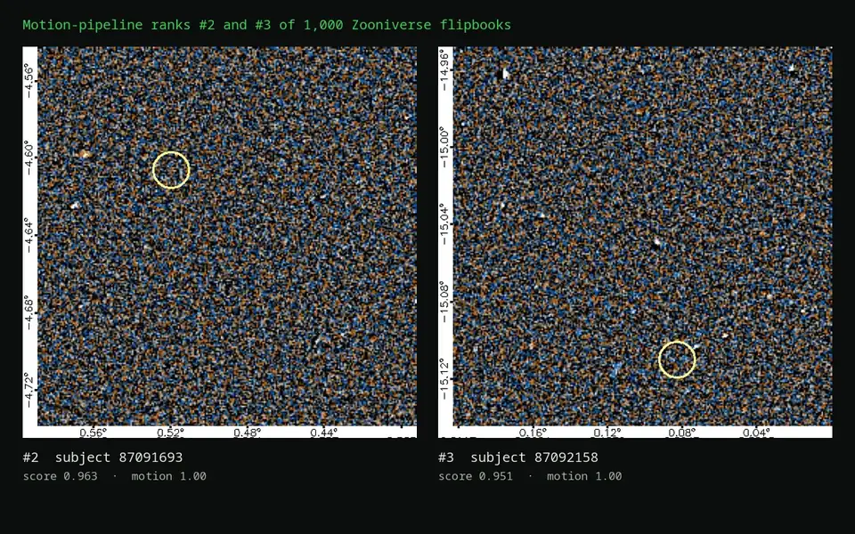
Ranking brown-dwarf and moving-object candidates in infrared sky flipbooks with DINOv3 features, in place of classifying them by hand.
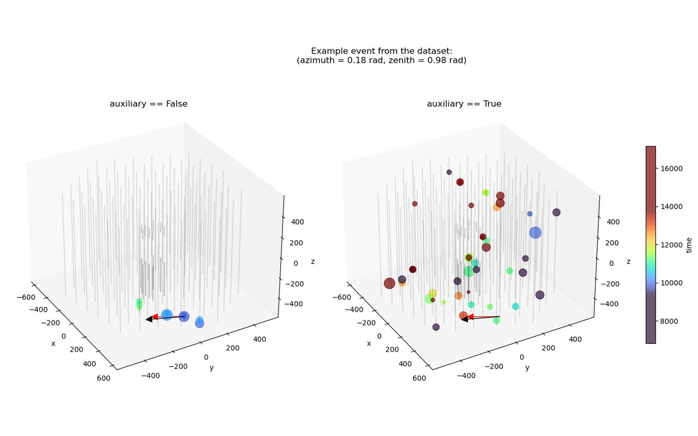
Predicting neutrino directions from detector pulses.